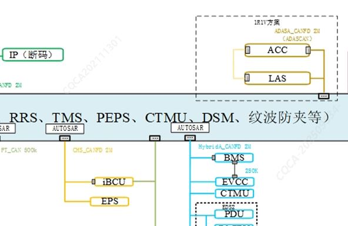
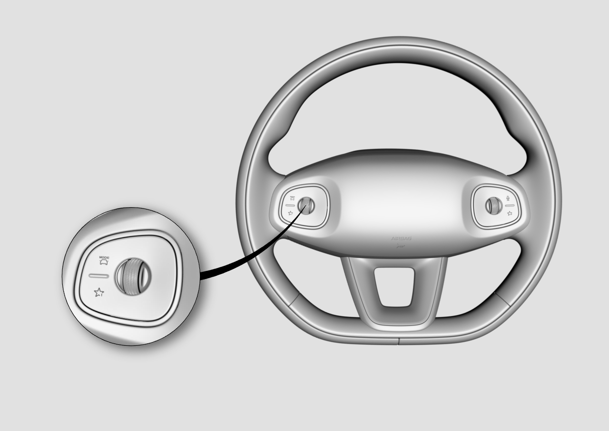

系统原理框图

车道辅助系统是通过安装在前挡风玻璃、内后视镜旁的摄像头实现车道偏离预警功能。车道辅助系统开启时，在仪表显示屏的行车电脑界面显示车道辅助系统的状态。在车辆设置界面→车辆中心→辅助驾驶→行车辅助，设置车道辅助系统功能。若车道辅助系统不可用时，在仪表显示屏中显示故障信息。系统主要功能如下：
车道偏离预警
在路面有车道线，且车速大于60km/h，车辆偏离车道，车轮压到车道标线时，仪表发出报警、方向盘振动报警。
车道保持
在路面有车道线，且车速大于60km/h，车辆偏离车道，车轮即将压到车道标线时，方向盘主动向反方向纠偏，使得车辆在车道内行驶。
自动远光灯控制
在黑暗的环境中，且车速大于30km/h，若前方没有车辆、路灯、来车，系统自动开启远光；若前方出现路灯、车辆、来车，系统自动切换回近光灯。
限速标志识别
行车过程中，摄像头自动识别道路限速标志，在仪表上显示，若车速超过道路限速值，则仪表发出报警。
集成式自适应巡航
利用自适应巡航控制系统使用的雷达（ACC）、车道辅助系统使用的摄像头（LAS）探测前方车辆、车道线，通过控制车速，保持车辆以设定的巡航速度行驶或与前车保持预先设定的跟车时距行驶，同时通过控制转向实现车辆在车道内行驶。
利用自适应巡航控制系统使用的雷达（ACC）、车道辅助系统使用的摄像头（LAS）探测前方车辆和运动轨迹，通过控制车速与前车保持预先设定的跟车时距行驶，同时通过控制转向跟随前车轨迹形式。
功能设置
车道偏离预警设置开关：
在中控显示屏的“车辆中心”→“辅助驾驶”→“行车辅助”界面进行车道偏离辅助模式/预警方式等设置
限速标志识别系统设置开关：
在中控显示屏的“车辆中心”→“辅助驾驶”→“行车辅助”界面进行超速预警设置。
智能远光灯系统设置开关：
在中控显示屏的“车辆中心”→“灯光”界面进行开启/关闭智能远光灯等设置。
集成式自适应巡航系统方向盘开关：

激活：通过下拨一次怀挡手柄激活
退出 ：怀挡手柄向上拨动一次，或主动踩制动踏板
调整巡航速度：通过方向盘左侧滚轮左右调节跟车时距
调整跟车时距：通过方向盘左侧滚轮左右调节跟车时距
在“车辆中心”→“辅助驾驶”→“行车辅助”界面进行开启/关闭车道巡航设置。